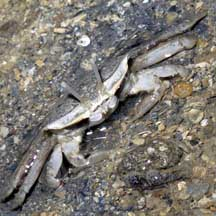
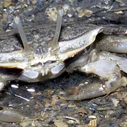
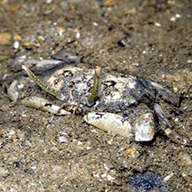
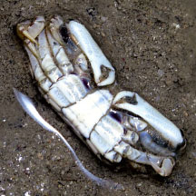
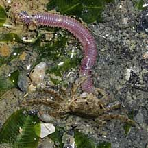
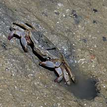
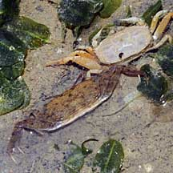
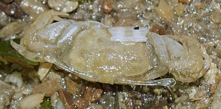

|
|
| crabs text index | photo index |
| Phylum Arthropoda > Subphylum Crustacea > Class Malacostraca > Order Decapoda > Brachyurans > Superfamily Ocypodoidea |
| Sentinel
crab Macrophthalmus sp. Family Macrophthalmidae updated Dec 2019 Where seen? This inconspicous little crab with eyes on super long stalks are sometimes seen on soft silty and muddy shores such as swimming lagoons. It builds distinctive holes which are either rectangular or oval and seldom circular. Features: Body width 0.5-1cm. Body is flattened, squarish or somewhat rectangular. The eye stalks are long and in some species can even extend outside the sides of the body. This feature probably gave them their common name. Both pincers of equal size. Sometimes confused with fiddler crabs (Uca spp.). Sentinel crabs do not have one enlarged pincer like the fiddler crabs. Sentinel crabs are also not colourful, usually drab brown with darker mottling. Here's more on how to tell apart small crabs with long eye stalks. What does it eat? It feeds on detritus and small worms. |
 Pulau Hantu, May 05  |
 Pulau Hantu, May 19  Photo shared by Jianlin Liu on facebook. |
|
 Nibbling on a worm. Pasir Ris, Jan 09 |
 Squarish burrow opening. Pulau Hantu, Jun 09 |
 Just moulted! Moult has transparent eyes. Pasir Ris, Dec 08 |
| Sentinel crabs on Singapore shores |
On wildsingapore
flickr
|
| Other sightings on Singapore shores |
 Moult with transparent eyestalks and eye Pulau Hantu, Dec 25 Photo shared by Rui Quan Oh on facebook. |
. |
|
Links
References
|